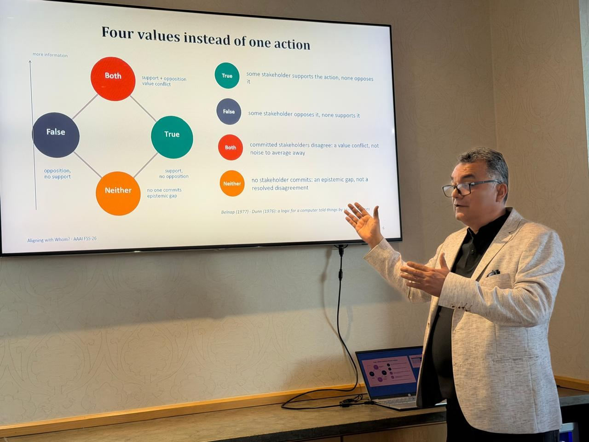
Opening keynote by Dr. Lorenzo J. Cevallos-Torres, on-site chair of the symposium (Arlington, 5 November 2026).
Current value alignment methods — RLHF, Constitutional AI, DPO — assume that human values converge to a single utility function when elicited at scale. Irreducible disagreements are often resolved by majority vote, which can silence minority positions at the moment of aggregation. This symposium asked: aligning with whom? It brought together work from formal logic, AI safety, reward modeling and value elicitation on paraconsistent and pluriversal alternatives to enforced convergence.
The seven accepted papers are published, open access, in the Proceedings of the AAAI Symposium Series, Vol. 10, No. 1 (2026), pp. 2–55.
| Thu, Nov 5 | Opening keynote — Dr. Lorenzo J. Cevallos-Torres, Aligning with Whom When the System Must Act? Four-Valued Decision Layers from Trading Pipelines to Classrooms. Poster session (papers 1229, 3149, 6958). |
| Fri, Nov 6 | Paper presentations (Tufts, IIT Guwahati / Maryland, GWU, UBE / UNM / UBO) and open discussion; closing of the symposium. |
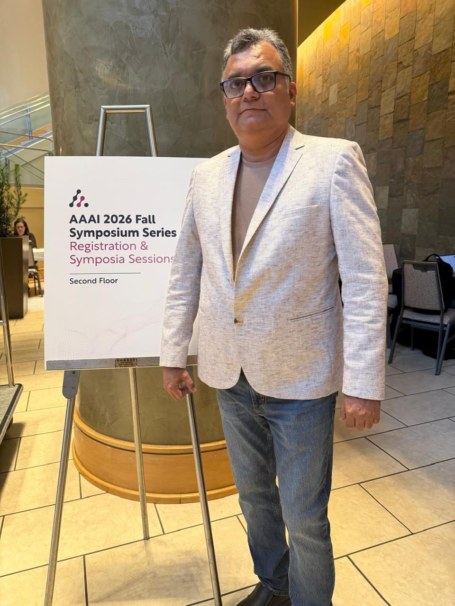
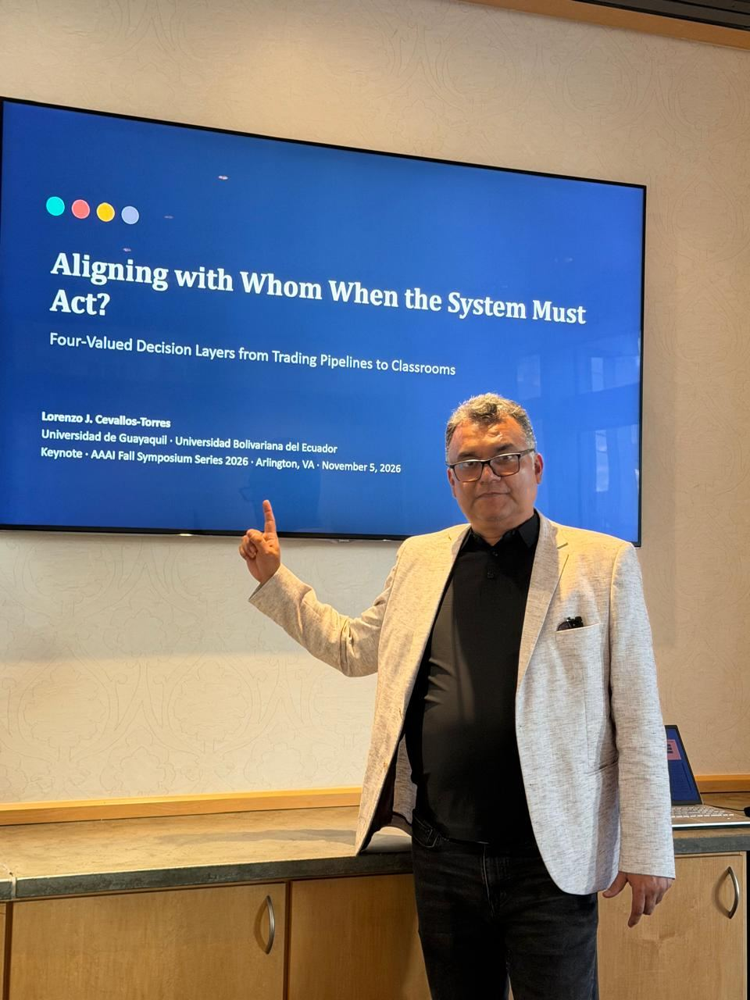
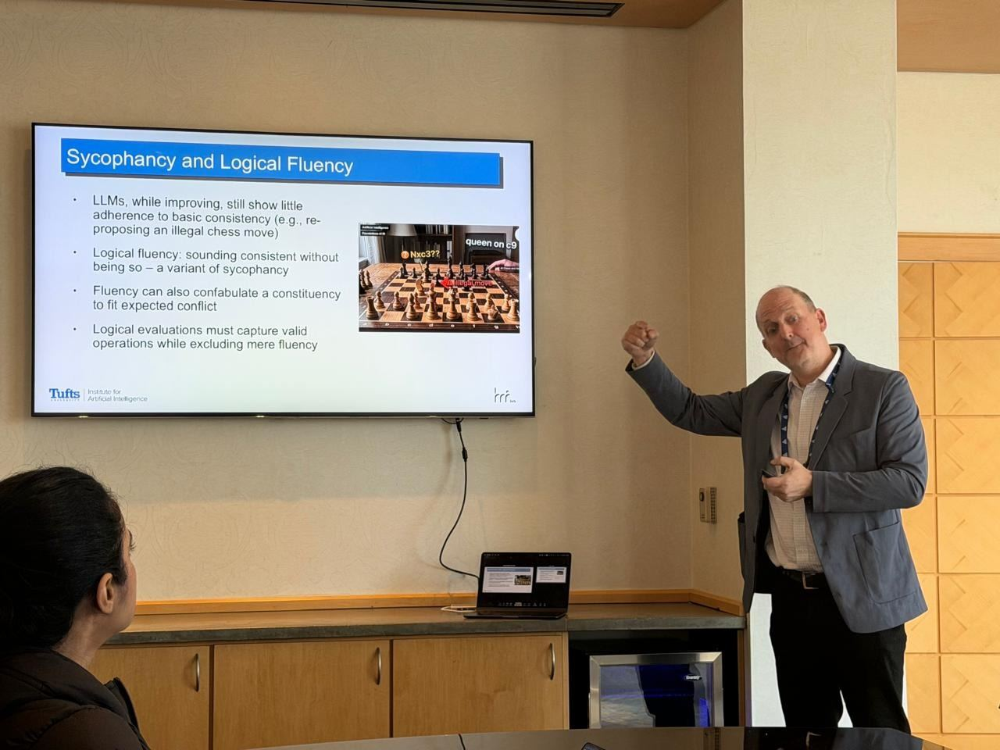
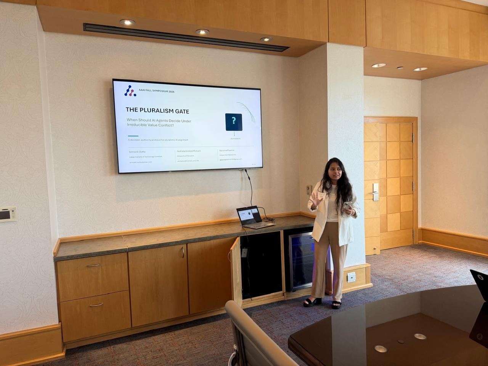
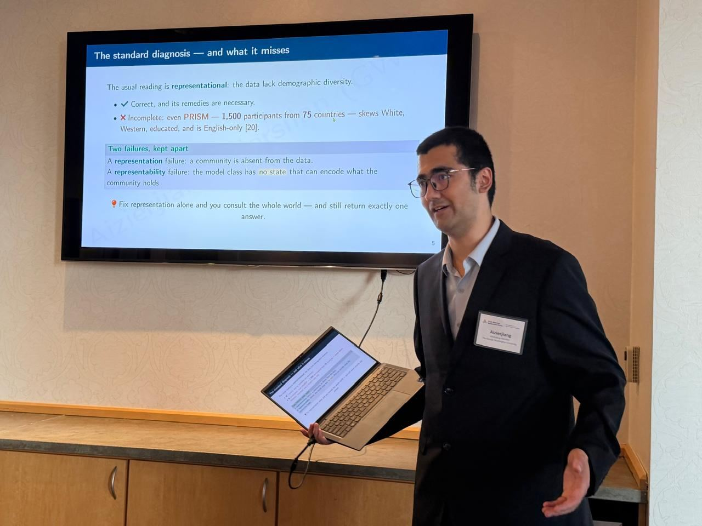
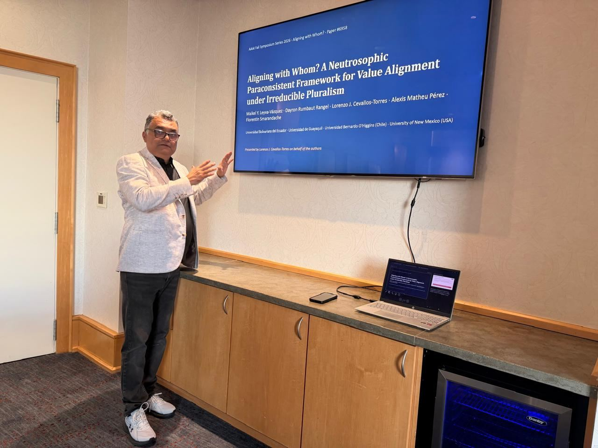
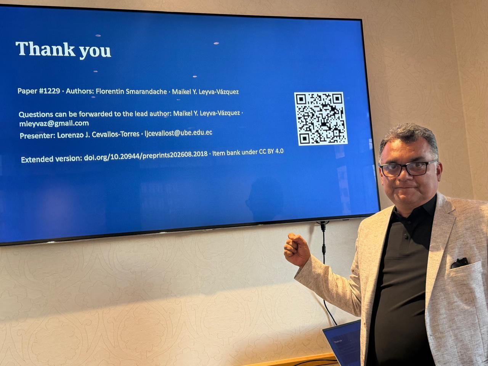
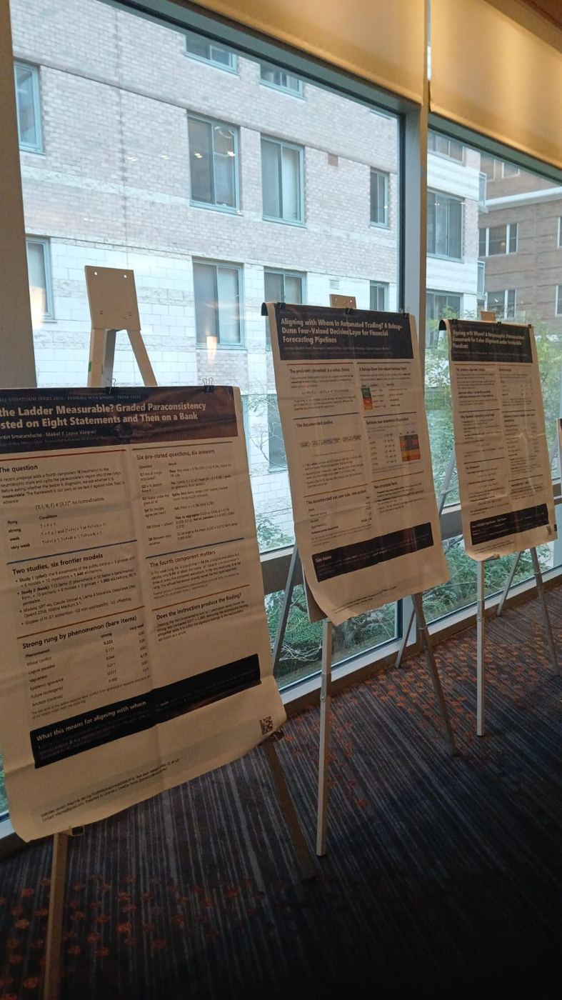
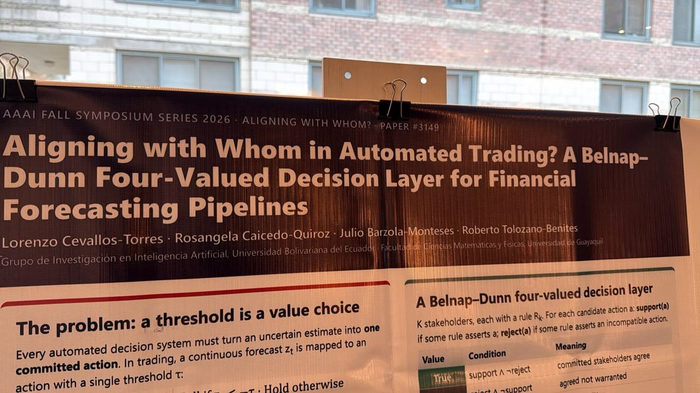
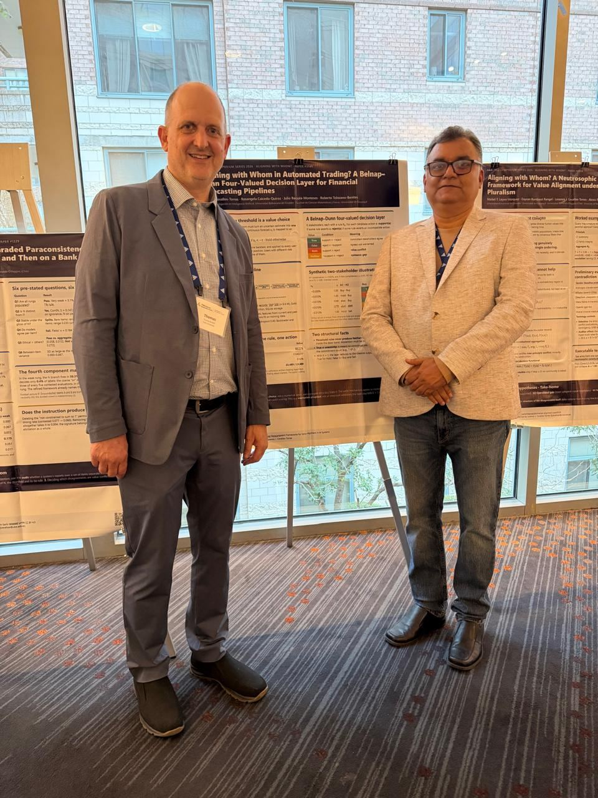
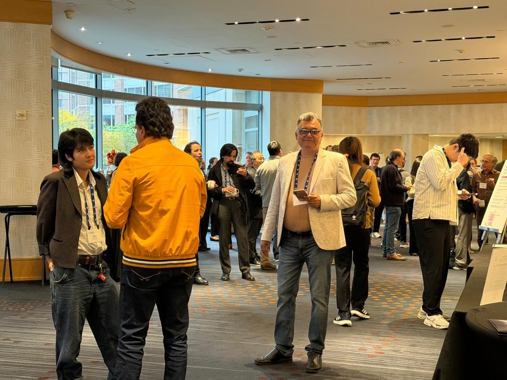
| Dr. Maikel Leyva-Vázquez (Chair) | Universidad Bolivariana del Ecuador / Universidad de Guayaquil, Ecuador |
| Dr. Lorenzo J. Cevallos-Torres (On-site chair) | Universidad Bolivariana del Ecuador / Universidad de Guayaquil, Ecuador |
| Prof. Florentin Smarandache | University of New Mexico, USA |
| Dr. Alexis Matheu Pérez | Universidad Bernardo O'Higgins, Chile |
We thank the Association for the Advancement of Artificial Intelligence (AAAI) and the Fall Symposium Series team for hosting the symposium and publishing the proceedings, all authors and participants for their work, and Mgtr. Rosa Inés Hernández Magallanes (Universidad Bolivariana del Ecuador) for her support during the sessions. Special thanks to Dr. Lorenzo J. Cevallos-Torres, who chaired the symposium in Arlington and gave the opening keynote when the chair could not travel.
Preprint (extended version of paper 6958):
Preprints.org 202607.2190 ·
code and pilot data: GitHub repository.
Contact: mleyvaz@gmail.com